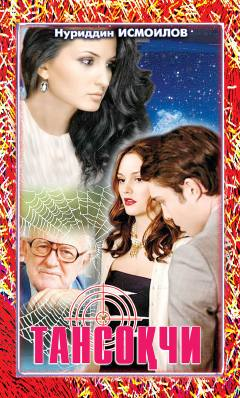

T1Nuriddin Ismoilovning qiziqarli detektiv-sarguzasht romanining birinchi kitobi.
Ushbu asar o'zbek yozuvchisi Nuriddin Ismoilovning qalamiga mansub bo'lib, o'quvchilarni hayajonli sarguzashtlar va detektiv voqealar olib boradi. Kitobda bosh qahramonning tansoqchilik faoliyati, murakkab vaziyatlar va kutilmagan uchrashuvlar haqida hikoya qilinadi. Asarning birinchi qismida voqealar rivoji tez va sirli tarzda boshlanadi.